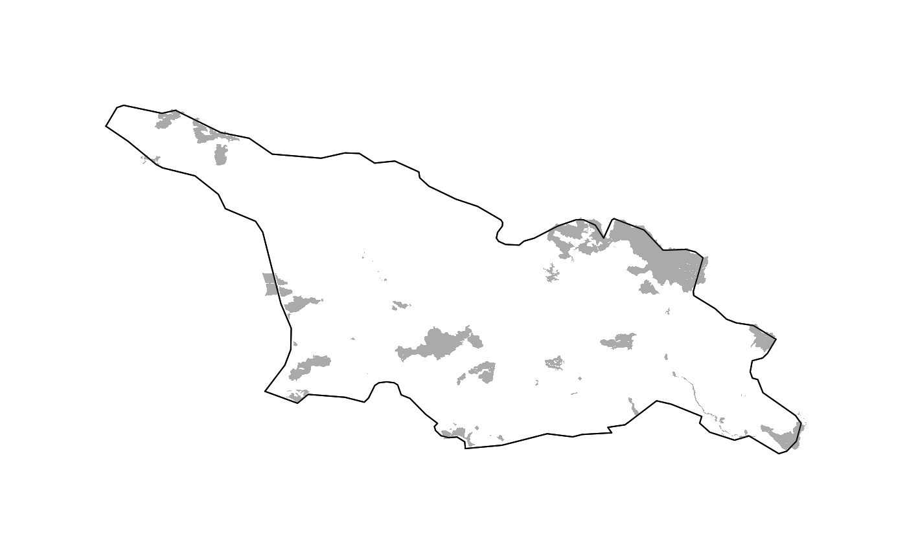

vignettes/worldpa.rmd
worldpa.rmdThis R package is an interface to the World Database on Protected Areas (WDPA) hosted on the Protected planet website: https://www.protectedplanet.net. It allows users to download spatial shapefiles of protected areas (PA) for world countries using the WDPA API (https://api.protectedplanet.net).
This package contains three main functions:
get_token(): check if your WDPA token is correctly stored;get_countries(): get world countries informations;get_wdpa(): download world protected areas shapefiles for one specified country.To install this package from GitHub, first install the package devtools from the CRAN (if not already installed).
# Install the {devtools} package
install.packages("devtools", dependencies = TRUE)
# Install the {worldpa} package
devtools::install_github("frbcesab/worldpa")
# Load the {worldpa} package
library(worldpa)
# Print the package content
ls("package:worldpa")
# Browse the package help
browseURL("https://frbcesab.github.io/worldpa/reference/")
# Read this vignette
browseURL("https://frbcesab.github.io/worldpa/articles/worldpa.html")This package uses the WDPA API to access data on world protected areas. You must first have obtained a Personal API Token by filling in the form available at: https://api.protectedplanet.net/request. Once you have obtained this token, you must store it on your computer. As recommended by Hadley Wickham in his Managing secrets vignette, you have to stored your API Token as an R Environment variable (a name-value pairs) listed in the .Renviron file in your home directory.
Use the function usethis::edit_r_environ() to open this file and add this line (by replacing z999zzz... with your Personal WDPA API Token):
WDPA_KEY=z999zzz9zzz999999z9z99zz999zz999Save the file and relaunch R.
Now, let’s check if your Personal WDPA API Token is correctly stored in your .Renviron file by using the function get_token().
The internal dataset wdpa_countries contains different informations on world countries (country and UNEP region names, ISO code and number of protected areas).
## region_name region_iso2 country_name country_iso3 pas_count
## 1 Africa AF Algeria DZA 78
## 2 Africa AF Angola AGO 14
## 3 Africa AF Benin BEN 59
## 4 Africa AF Botswana BWA 22
## 5 Africa AF Burkina Faso BFA 96
## 6 Africa AF Burundi BDI 21
## 7 Africa AF Cabo Verde CPV 7
## 8 Africa AF Cameroon CMR 49
## 9 Africa AF Central African Republic CAF 38
## 10 Africa AF Chad TCD 22As the WDPA is updated every month, you can get an updated version of this dataset by using the function get_countries():
Now, let’s use the function get_wdpa() to download protected areas shapefiles for Georgia.
## region_name region_iso2 country_name
## 133 Europe EU Georgia
## 235 Polar PO South Georgia and the South Sandwich Islands
## country_iso3 pas_count
## 133 GEO 89
## 235 SGS 1## Simple feature collection with 89 features and 6 fields
## geometry type: MULTIPOLYGON
## dimension: XY
## bbox: xmin: 40.31 ymin: 41.093 xmax: 46.736 ymax: 43.544
## epsg (SRID): 4326
## proj4string: +proj=longlat +datum=WGS84 +no_defs
## First 10 features:
## wdpa_id pa_name country_iso3 is_marine designation
## 1 1652 Borjomi GEO FALSE Strict Nature Reserve
## 2 1653 Lagodekhi GEO FALSE Strict Nature Reserve
## 3 1654 Ritsa GEO FALSE Strict Nature Reserve
## 4 1656 Kintrishi GEO FALSE Strict Nature Reserve
## 5 1657 Liakhvi GEO FALSE Strict Nature Reserve
## 6 1660 Vashlovani GEO FALSE Strict Nature Reserve
## 7 1664 Bichvinta-Miusera GEO FALSE Strict Nature Reserve
## 8 1665 Mariamjvari GEO FALSE Strict Nature Reserve
## 9 1666 Kolkheti GEO TRUE National Park
## 10 1667 Sataplia GEO FALSE Strict Nature Reserve
## iucn_category geom
## 1 Ia MULTIPOLYGON (((43.392 41.9...
## 2 Ia MULTIPOLYGON (((46.27 41.89...
## 3 Ia MULTIPOLYGON (((40.596 43.4...
## 4 Ia MULTIPOLYGON (((41.996 41.7...
## 5 Ia MULTIPOLYGON (((44.331 42.3...
## 6 Ia MULTIPOLYGON (((46.623 41.1...
## 7 Ia MULTIPOLYGON (((40.5 43.151...
## 8 Ia MULTIPOLYGON (((45.364 41.7...
## 9 II MULTIPOLYGON (((41.754 42.0...
## 10 Ia MULTIPOLYGON (((42.677 42.3...The returned object is a simple feature {sf object} of MULTIPOLYGONS.
## [1] "GEO_protectedareas/GEO_protectedareas.dbf"
## [2] "GEO_protectedareas/GEO_protectedareas.prj"
## [3] "GEO_protectedareas/GEO_protectedareas.shp"
## [4] "GEO_protectedareas/GEO_protectedareas.shx"The function get_wdpa() has also exported the protected areas as an ESRI Shapefile in the working directory.
Finally, let’s vizualise the shapefile (the ggplot2 way also works):
# Plot Georgia administrative boundaries
maps::map(regions = "Georgia")
# Add Georgia protected areas
plot(sf::st_geometry(pa_sf), col = "#aaaaaa", border = NA, add = TRUE)
# Plot Georgia administrative boundaries
maps::map(regions = "Georgia", add = TRUE)
If you have any question, please open an issue at: https://github.com/frbcesab/worldpa/issues